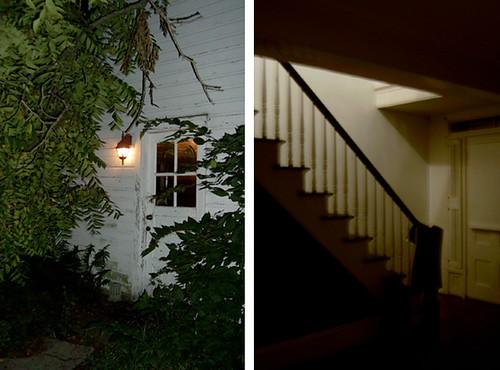

You struggle as you try to pull yourself through the window. You make it through the window but manage to cut open your arm and hip in the process. You tear off a piece of your shirt to wrap around your arm to stop the bleeding and tear a piece of your pants leg to stop the bleeding of your hip. You walk through what looks like the living room of the house and you make it to the the front hallway of the house. You see two options, make your way up the stairs the bedroom or unlock the front door and go back outside.

What do you decide to do?